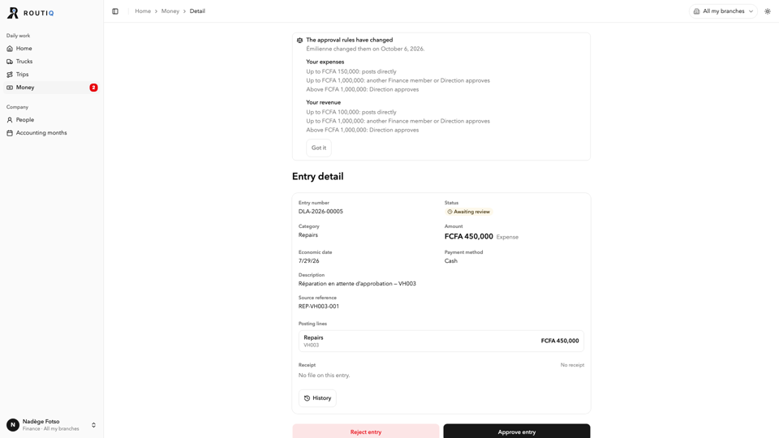
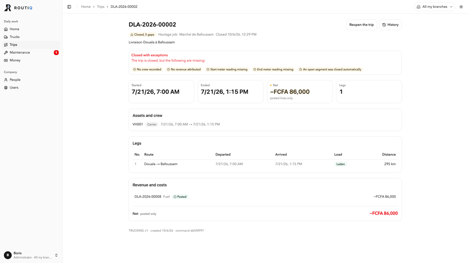
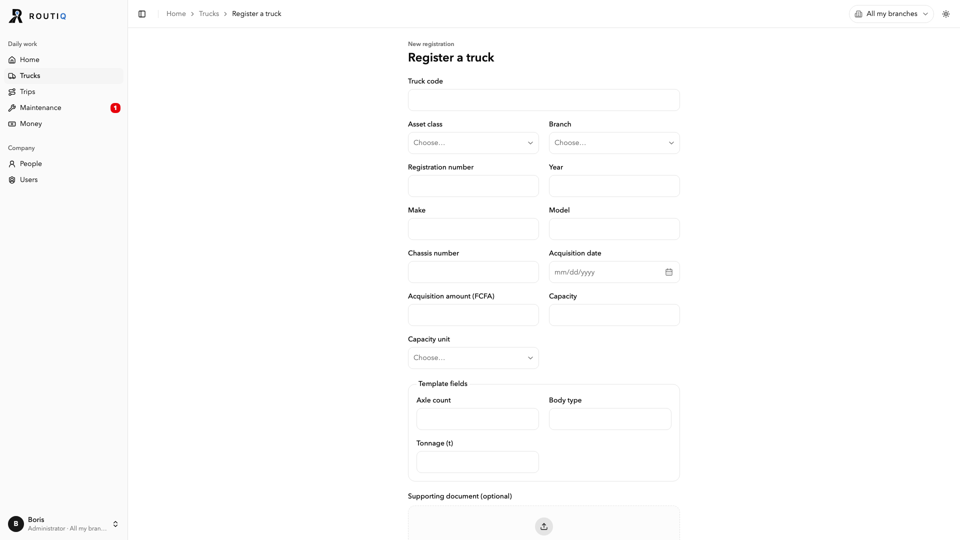

Full pages
A full page shows one thing (a money entry, a trip, a truck) or one long form (record a trip sheet, register a truck). Today each one picks its own width, header and button placement. This proposes one frame for all of them, with a fixed use for the empty space on wide screens: a right-hand column with context.
Three widths, three headers, three places for buttons
Real screens from develop @ 51d4a7d at 1920 px (seeded demo, run with pnpm verify on 2026-10-10). The sidebar leaves 1 664 px for content.






| What | Money entry | Trip | Truck | Forms |
|---|---|---|---|---|
| Width at 1920 | 736 | 1 120 | 1 120 | 544 (truck) · 1 120 (trip) |
| Title | "Entry detail" | Trip number | Truck code (smaller, own header) | Form name |
| Status | A field in the grid | Badge under the title | Full-width coloured banner | — |
| Actions | Full-width buttons under the card | Header, top right | Header + "Release to service" in the banner | Inline footer · sticky bar |
| History | Button in the card | Header button | Tab | — |
| Fields | Labels above, 2 columns, one card | Cards with titles | Labels left, 3 columns | Cards · no cards |
One frame, one width
Every page (lists, dashboards and full pages) sits in the same frame: at most 1 200 px, centred. On a full page the frame splits into a main column and a 300 px context column. The empty space that is left at the sides is the same on every page, so moving between pages never makes the content jump.
What goes in the context column
- A record (entry, trip, truck): the money box, linked records (truck, trip, work order), the 3 latest history lines.
- A long form: "so far", a live summary of what was entered, what's still missing, and when the draft was saved.
- A settings page: the list of its sections, to jump to.
- Never actions that exist nowhere else, and never the only copy of a number.
The empty space, explained
- At 1920: about 230 px each side, on every page. That's the frame's margin, by design.
- At 1440 and below: no side margin beyond the 24 px gutter.
- Text lines stay readable because the main column is about 840 px, not because a page shrinks itself.
- Tables use the main column (record) or the whole frame (list) and scroll sideways inside it if they must.
Top to bottom, every full page
- Breadcrumb ending with the record's own name, never "Detail".
- Header: the record's number or name as title, its status badge beside it, one line of facts, buttons top right (one filled).
- Status block, only when something blocks or waits: what, who acts, the button.
- Tabs: Overview first, History last (the truck moves Details before History).
- Sections with titles, the same groups as the form that created the record.
A money entry, waiting for approval (finance)
Same data as the screen above. The approval moves into the status block at the top, where it can't fall below the fold. The context column carries the amount, what it's linked to and the latest history.
DLA-2026-00005 Waiting for approval
What
Who and how much
Proof
No receiptAmount
Linked
A trip, closed with things missing
Same frame. The status block says what's missing and offers the fix. "Net" becomes profit or loss, in the money words from Dashboards.
DLA-2026-00002 Closed, 5 things missing
Truck and crew
Job
Linked
A long form: Record a sheet
Same frame. The form keeps the 760 px column decided in Form layouts (Long capture); the context column becomes "So far": a live summary that doubles as the check before saving. Buttons sit in one sticky bar, main button last. Register a truck uses the same frame.
Record a sheet
References
DoneTruck and meters
1 missingCrew
Not startedLegs
1 legRevenue and expenses
2 linesThe same record on a phone
DLA-2026-00005
What
Proof
No receiptPhone rules
- One column. The context column's money box comes right after the tabs; linked records and history go to the end of the Overview.
- The status block keeps its sentence; its buttons move to the bottom action bar, the main one on the right.
- Tabs scroll sideways; Overview first, History last.
- Long forms become one step per section, then a review step that shows "So far" (decided in Form layouts).
Every full page in the app
From the inventory of develop. Work orders, problems, people and branches open in panels or dialogs today; when one gets its own page, it uses this frame.
| Page | Kind | Tabs | Status block when | Buttons (filled last) | Context column |
|---|---|---|---|---|---|
Money entry /finance/entries/$id | Record | Overview · Receipt · History | Waiting approval, rejected, missing receipt, cancelled | Attach receipt · ⋯ (Edit, Cancel); Approve in the status block | Amount, linked truck / trip / work order, latest |
Trip /activities/$id | Record | Overview · Legs · Money · History | Open, closed with things missing | Reopen · ⋯; Complete in the status block | Money (profit or loss), truck, latest |
Truck /assets/$id | Record (the model) | Overview · Trips · Money · Maintenance · Documents · Details · History (History moves last) | Grounded, papers expired | Record expense · More actions | This month's money, latest (already there) |
Record a sheet /activities/record | Form | — | — | Save draft · Record and close · Record sheet | So far, still missing, draft saved |
Register a truck /assets/new | Form | — | — | Cancel · Register | So far, still missing |
Company settings /more/company | Settings | — | — | Per section | The list of sections |
My settings /my-settings | Settings | — | — | Per section | The list of sections |
Parts and code
Components
- PageFrame: the only width (max 1 200, centred, 24 px gutters).
PageContainer's narrow / default / wide go; lists, dashboards and full pages all use it. - RecordHeader: breadcrumb name, title + status badge, facts line, actions. Replaces
PageHeaderon records and the truck'sIdentityStrip, so all three look the same. - StatusBlock: the truck's banner, used by every record. Tone, sentence, who acts, the button.
- RecordTabs: Overview first, History last, tab in the address.
- FactsSection: titled card, labels above, two columns, same groups as the form. "Not recorded" with "Add" when allowed.
- ContextColumn: 300 px, sticky, drops below main under 1 280 px.
- FormPage: frame + 760 px form column + "So far" column + one sticky footer.
Guards so it stays this way
- A route test: every full-page route renders
PageFrameand eitherRecordHeaderorFormPage. - A lint rule: no
max-w-*class inscreens/; width comes only fromPageFrame. - A lint rule: no full-width buttons below a record's content (
w-fullon a button inside a record screen). - The breadcrumb test already planned: the last item is the record's name.
Decisions
| # | Question | Recommendation | Other options | Pick |
|---|---|---|---|---|
| 1 | One width for every page? | Yes, 1 200 px, centred, for lists, dashboards and full pages | Keep three widths (narrow forms, default, wide) | ☐ |
| 2 | Context column on full pages? | Yes: records, long forms and settings pages, never on panels | One wide column and nothing beside it | ☐ |
| 3 | Where does History live? | Always the last tab, plus the 3 latest lines in the context column | A header button | ☐ |
| 4 | Where do approve, complete and release go? | In the status block at the top, because they answer it; other actions in the header. This replaces the fixed bottom action bar decided for the Record workspace on 2026-10-04 (README). The truck already does this with "Release to service" | Keep the fixed bottom action bar on desktop | ☐ |
| 5 | How is money written? | Decided once for every page: Dashboards, decision 9 (recommendation "450 000 FCFA"). These mockups use XAF until then. | ||
| 6 | How are dates written? | "29 July 2026" / "29 juillet 2026", short form 29/07/2026 | "7/29/26" (today in English: the US order) | ☐ |